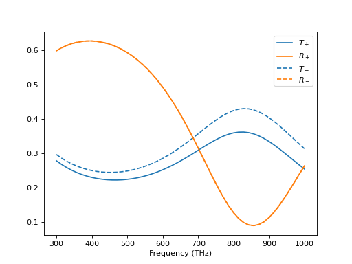
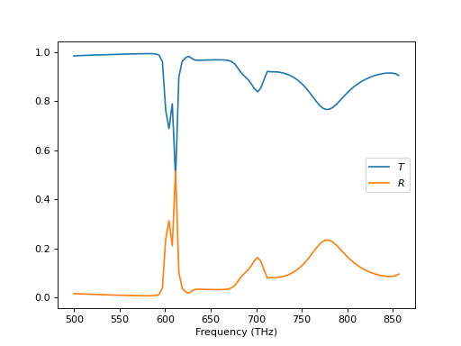
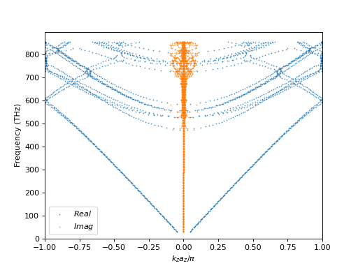

S-Matrices for plane waves#
In addition to the T-matrix method, where incident and scattered fields are related, S-matrices relate incoming and outgoing fields. To describe scattering in the plane wave basis, we use exactly such a S-matrix description. The incoming and outgoing waves are defined with respect to a plane, typically the x-y-plane. This plane additionally separates the whole space into two parts. This then separates the description into four parts: the transmission of fields propagating in the positive and negative z-direction, and the reflection of those fields.
Slabs#
The main object for plane wave computations is the class treams.SMatrices
which exactly collects those four individual S-matrices. For simple interfaces and the
propagation in a homogeneous medium these S-matrices can be obtained analytically.
Combining these two objects then allows the description of simple slabs.
k0s = 2 * np.pi * np.linspace(1 / 1000, 1 / 300, 50)
materials = [(), (12.4 + 1j, 1 + 0.1j, 0.5 + 0.05j), (2, 2)]
thickness = 50
tr = np.zeros((2, len(k0s), 2))
for i, k0 in enumerate(k0s):
pwb = treams.PlaneWaveBasisByComp.default([0, 0.5 * k0])
slab = treams.SMatrices.slab(thickness, pwb, k0, materials)
tr[0, i, :] = slab.tr([1, 0])
tr[1, i, :] = slab.tr([0, 1])
The setup is fairly simple. The materials are given in order from negative to positive z-values. We simply loop over the wave number and calculate transmission and reflection in the chiral medium for both helicites.
(Source code, png, hires.png, pdf)
{kind=link}
{kind=link}

From T-matrix arrays#
While this example is simple we can build more complicated structures from two-dimensional arrays of T-matrices. We take spheres on an thin film as an example. This means we first calculate the S-matrices for the thin film and the array individually and then couple those two systems.
k0s = 2 * np.pi * np.linspace(1 / 600, 1 / 350, 100)
material_slab = 3
thickness = 10
material_sphere = (4, 1, 0.05)
lattice = treams.Lattice.square(500)
radius = 100
lmax = 3
Beforehand, we define all the necessary parameters. First the wave numbers, then the parameters of the slab, and finally those for the lattice and the spheres. Then, we can use a simple loop to solve the system for all wave numbers.
tr = np.zeros((len(k0s), 2))
for i, k0 in enumerate(k0s):
kpar = [0, 0.3 * k0]
spheres = treams.TMatrix.sphere(
lmax, k0, radius, [material_sphere, 1]
).latticeinteraction.solve(lattice, kpar)
pwb = treams.PlaneWaveBasisByComp.diffr_orders(kpar, lattice, 0.02)
plw = treams.plane_wave(kpar, [1, 0, 0], k0=k0, basis=pwb, material=1)
slab = treams.SMatrices.slab(thickness, pwb, k0, [1, material_slab, 1])
dist = treams.SMatrices.propagation([0, 0, radius], pwb, k0, 1)
array = treams.SMatrices.from_array(spheres, pwb)
total = treams.SMatrices.stack([slab, dist, array])
tr[i, :] = total.tr(plw)
We set some oblique incidence and the array of spheres. Then, we define a linearly polarized plane wave and the needed S-matrices: a slab, the distance between the top interface of the slab to the center of the sphere array, and the array in the S-matrix representation itself.
(Source code, png, hires.png, pdf)
{kind=link}
{kind=link}

From cylindrical T-matrix gratings#
Now, we want to perform a small test of the methods. Instead of creating the two-dimensional sphere array right away, we intermediately create a one-dimensional array, then calculate cylindrical T-matrices, and place them in a second one-dimensional lattice, thereby, obtaining the S-matrix from the previous section.
k0s = 2 * np.pi * np.linspace(1 / 600, 1 / 350, 100)
material_slab = 3
thickness = 10
material_sphere = (4, 1, 0.05)
pitch = 500
lattice = treams.Lattice.square(pitch)
radius = 100
lmax = mmax = 3
The definition of the parameters is quite similar. We store the lattice pitch for later
use separately and define the maximal order mmax separately.
tr = np.zeros((len(k0s), 2))
for i, k0 in enumerate(k0s):
kpar = [0, 0.3 * k0]
spheres = treams.TMatrix.sphere(
lmax, k0, radius, [material_sphere, 1]
).latticeinteraction.solve(pitch, kpar[0])
cwb = treams.CylindricalWaveBasis.diffr_orders(kpar[0], mmax, pitch, 0.02)
spheres_cw = treams.TMatrixC.from_array(spheres, cwb)
chain_cw = spheres_cw.latticeinteraction.solve(pitch, kpar[1])
pwb = treams.PlaneWaveBasisByComp.diffr_orders(kpar, lattice, 0.02)
plw = treams.plane_wave(kpar, [1, 0, 0], k0=k0, basis=pwb, material=1)
slab = treams.SMatrices.slab(thickness, pwb, k0, [1, material_slab, 1])
dist = treams.SMatrices.propagation([0, 0, radius], pwb, k0, 1)
array = treams.SMatrices.from_array(chain_cw, pwb)
total = treams.SMatrices.stack([slab, dist, array])
tr[i, :] = total.tr(plw)
The first half of the loop is now a little bit different. After creating the spheres we solve the interaction along the z-direction, then create the cylindrical T-matrix and finally calculate the interaction along the x-direction. The second half is the same as in the previous calculation.
The most important aspect to note here, is that the method
treams.SMatrix.from_array() implicitly converts the lattice in the z-x-plane to
a lattice in the x-y-plane.
(Source code, png, hires.png, pdf)
{kind=link}
{kind=link}
Band structure#
Finally, we want to compute the band structure of a system consisting of the periodic repetition of an S-matrix along the z-direction. In principle, one can obtain this band structure also from the lattice interaction in the T-matrix, but calculating it from the S-matrix has two benefits. First, more complex systems can be analyzed, because slabs and objects described by cylindrical T-matrices can be included. Second, one only defines \(k_0\), \(k_x\), and \(k_y\). Then, the result of the calculation are all components \(k_z\) and the plane wave decomposition of the polarization from an eigenvalue decomposition. So, instead of a 4-dimensional parameter sweep only a 3-dimensional sweep is necessary decreasing the computation time. The downside is, that one is restricted to unit cells, where one vector points along the z-axis and is perpendicular to the other two.
We take the array of spheres on top of a slab and continue this one infinitely along the z-axis. Thus, the setup is
k0s = 2 * np.pi * np.linspace(1 / 10_000, 1 / 350, 200)
material_slab = 3
thickness = 10
material_sphere = (4 + 0.1j, 1, 0.05)
lattice = treams.Lattice.square(500)
radius = 100
lmax = 3
az = 210
where az is the length of the lattice vector pointing in the z-direction. With a
simple loop we can get the band structure for \(k_x = 0 = k_y\).
res = []
for i, k0 in enumerate(k0s):
kpar = [0, 0]
spheres = treams.TMatrix.sphere(
lmax, k0, radius, [material_sphere, 1]
).latticeinteraction.solve(lattice, kpar)
pwb = treams.PlaneWaveBasisByComp.diffr_orders(kpar, lattice, 0.02)
plw = treams.plane_wave(kpar, [1, 0, 0], k0=k0, basis=pwb, material=1)
slab = treams.SMatrices.slab(thickness, pwb, k0, [1, material_slab, 1])
dist = treams.SMatrices.propagation([0, 0, radius], pwb, k0, 1)
array = treams.SMatrices.from_array(spheres, pwb)
total = treams.SMatrices.stack([slab, dist, array, dist])
x, _ = total.bands_kz(az)
x = x * az / np.pi
sel = x[np.abs(np.imag(x)) < 0.1]
res.append(sel)
which looks as follows, after a cut on the imaginary part of the \(k_z\) component.
(Source code, png, hires.png, pdf)
{kind=link}
{kind=link}
